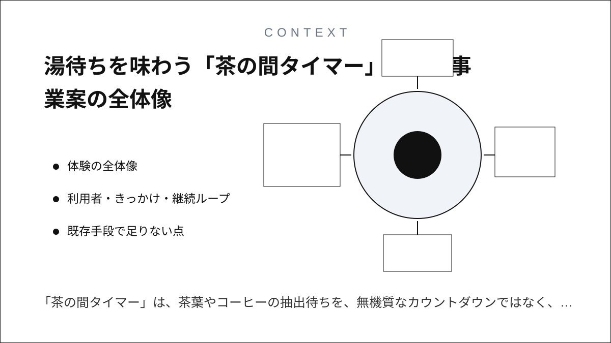
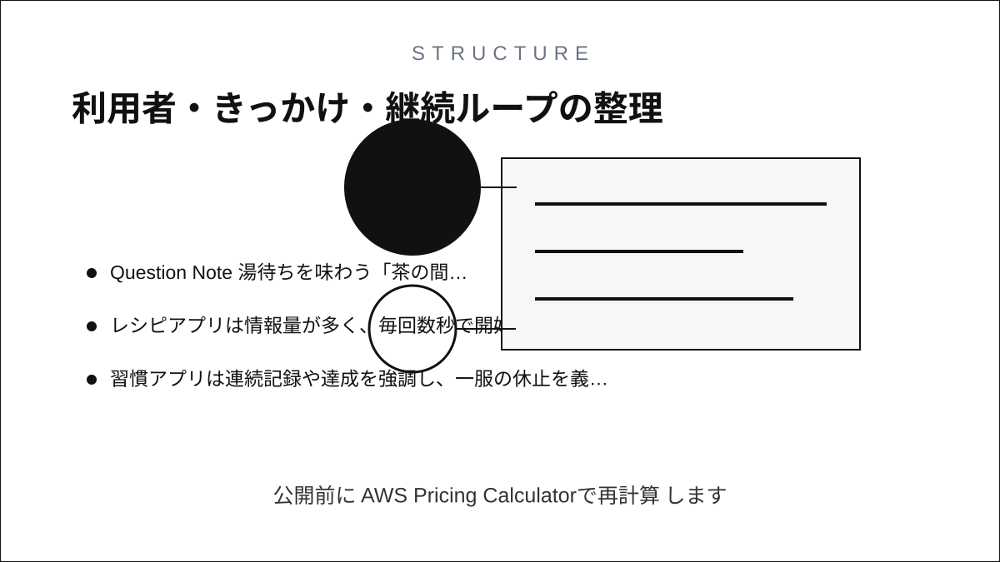
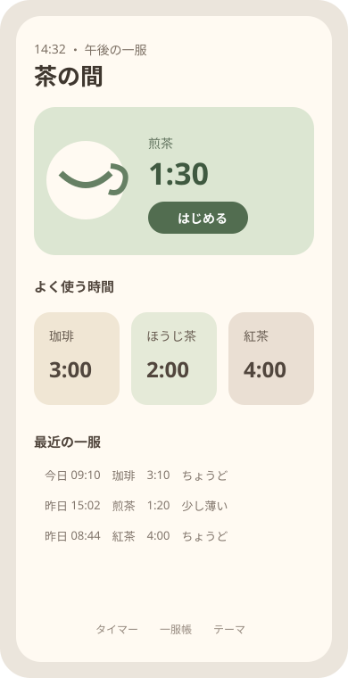
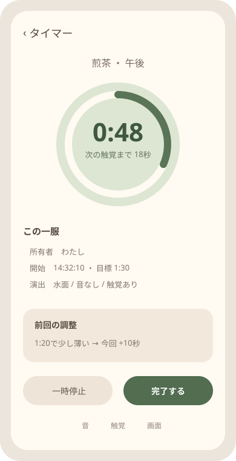
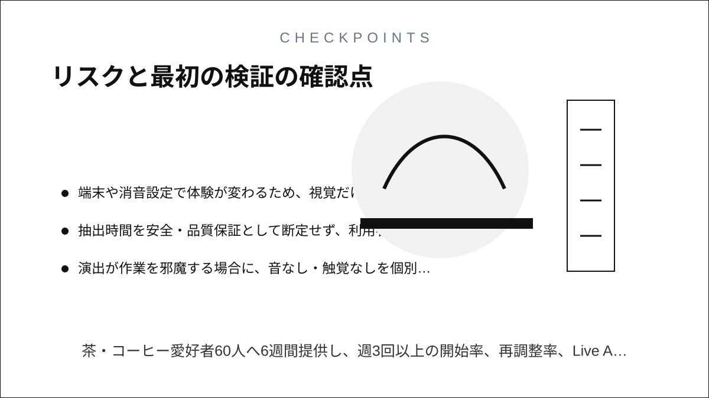

Question Note
湯待ちを味わう「茶の間タイマー」アプリ事業案




体験の全体像
「茶の間タイマー」は、茶葉やコーヒーの抽出待ちを、無機質なカウントダウンではなく、短い環境音、画面のにじみ、控えめな触覚で味わうアプリです。中心の楽しさは2〜5分の待ち時間が小さな休止になり、好みの抽出を一服の記憶として残せることです。
利用者・きっかけ・継続ループ
| 主対象 | 自宅や職場で一日に1〜3回、茶・コーヒーを淹れる個人 |
|---|---|
| 状況トリガー | 湯を注いだ瞬間 |
| 反復ループ | 飲み物を選ぶ → タイマー開始 → 音・触覚を味わう → 濃さを一段階記録 |
| 端末面 | ロック画面Live Activity、Dynamic Island、Apple Watch、アプリ内一服帳 |
| 内容差分 | 飲み物、時間帯、季節テーマ、音の有無、触覚パターン |
既存手段で足りない点
- 標準タイマーは終了通知に最適化され、待つ過程を楽しむ設計ではありません。
- レシピアプリは情報量が多く、毎回数秒で開始する日常儀式には重いです。
- 習慣アプリは連続記録や達成を強調し、一服の休止を義務に変えがちです。
サービス構成と保持理由
- 最近使った飲み物と時間をワンタップで開始する。
- Live Activityが残り時間を表示し、節目だけ触覚で知らせる。
- 完了後に「薄い・ちょうど・濃い」の一段階だけ残す。
- 次回は前回値を基準に10秒単位で調整する。
クラウドはレシピと購入権利の同期に限定し、タイマーはオフラインで完了します。広告なしの静けさ、触覚・音テーマ、飲み物別の履歴、Watch連携が保持・支払い理由です。
100万円規模に抑えた市場設定
| 到達可能利用者 | 茶・コーヒー店との共同紹介で6,000人 | 狭い趣味市場へ直接到達 |
|---|---|---|
| 年額プラン | 900人 x 900円 | 810,000円 |
| 音・触覚テーマ | 700件 x 300円 | 210,000円 |
| 初年度売上 | 合計 | 1,020,000円 |
AWSシステム要件と支出
東京リージョン、1 USD = 150円、無料枠・クレジット除外、1,500 MAU、月15万同期、音源10GBの概算です。公開前にAWS Pricing Calculatorで再計算します。
| AWSリソース | 用途 | 使用量 | 月額 | 年額 |
|---|---|---|---|---|
| Amazon S3 | 環境音、触覚定義、飲み物プリセット | 10GB | 400円 | 4,800円 |
| Amazon CloudFront | テーマ素材配信 | 月50GB | 1,300円 | 15,600円 |
| Amazon Cognito | 任意同期アカウント | 1,000 MAU | 600円 | 7,200円 |
| Amazon API Gateway | 一服・購入権利同期API | 月15万件 | 400円 | 4,800円 |
| AWS Lambda | 購入検証、プリセット更新 | 月15万実行 | 500円 | 6,000円 |
| Amazon DynamoDB | 利用者設定、飲み物、抽出秒数、濃さ評価、一服日時、テーマ、購入権利、同期版、削除状態 | 3GB、月25万読書き | 1,000円 | 12,000円 |
| Amazon SES | 購入・復旧メール | 月1,000通 | 200円 | 2,400円 |
| Amazon CloudWatch | 同期・配信失敗監視 | ログ2GB、6アラーム | 800円 | 9,600円 |
| AWS Backup | 一服履歴と購入権利の日次復旧 | 8GB | 450円 | 5,400円 |
| AWS Budgets | 配信費上限通知 | 2予算 | 150円 | 1,800円 |
| Amazon Route 53 | 紹介サイト・APIのDNS | 1ゾーン | 100円 | 1,200円 |
| AWS合計 | 小規模時の予算上限 | 5,900円 | 70,800円 | |
AIを使った開発見積もり
| 体験設計 | 時間・音・触覚パターンの発散 | 1.5週 |
|---|---|---|
| 試作 | Live Activityと端末内タイマー | 2.5週 |
| 本実装 | Watch、同期、課金、テスト補助 | 5週 |
| 感覚検証 | 実機触覚、音量、アクセシビリティ | 3週 |
AIなしの約17週を約12週へ短縮します。触覚の快不快、音の権利、抽出推奨値は人が確認します。
売上・支出・利益
売上 - 支出 = 利益
| 売上 | 1,020,000円 | 年額810,000円 + テーマ210,000円 |
|---|---|---|
| 支出 | 333,800円 | AWS 70,800円、ストア手数料等153,000円、音・触覚制作75,000円、端末・検証35,000円 |
| 利益 | 686,200円 | 事業主の制作・運営人件費と税引前 |
必要人数と人材要件
iOS開発・運営1名 + 音響単発外注です。実行者がActivityKit、Core Haptics、Watch、AWS同期を担い、音源制作と感覚評価を外注します。
リスクと最初の検証
- 端末や消音設定で体験が変わるため、視覚だけでも完了が分かるようにする。
- 抽出時間を安全・品質保証として断定せず、利用者が調整する目安にする。
- 演出が作業を邪魔する場合に、音なし・触覚なしを個別設定できるようにする。
茶・コーヒー愛好者60人へ6週間提供し、週3回以上の開始率、再調整率、Live Activity利用率、年額900円の購入意思を測ります。
